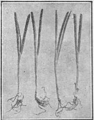
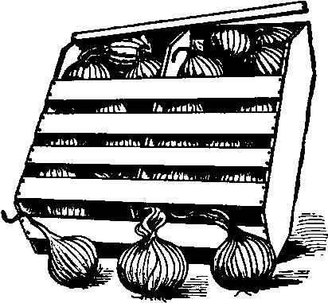

536. The Transplanting Methods For Onion
Description
This section is from the book "Vegetable Gardening", by Ralph L. Watts. Also available from Amazon: Vegetable Gardening.
536. The Transplanting Methods For Onion
The Transplanting Method, known as the new onion culture, was developed simultaneously in 1888 and 1889 by T. Greiner of New York state and professor W. J. Green of the Ohio Experiment Station. It consists in sowing the seeds in hotbeds or greenhouses six weeks or more in advance of transplanting in the field. The advantages as stated by Professor Green (Ohio Sta. Bul. Vol. III, No. 9, p. 249) are as follows:
"1. Transplanting onions increased the yield 100 per cent in some cases and gave a decided gain with all varieties. The varieties that gave the best results were Pompeii,Prizetaker and White Victoria. Those showing the smallest gain were Danvers, Weathersfield and Michigan.
2. The transplanted onions were larger and more uniform in size than those grown from seed in the ordinary manner.
3. The transplanted onions ripened from three to four weeks earlier than those grown from seed sown in the open ground.
4.The extra labor involved in transplanting was offset by the saving of labor in weeding. The increase in crop, without a corresponding increase in labor, lessened the cost per bushel in production".
Investigations at many of the experiment stations have been favorable to this method of culture, which is popular with a large number of growers, although seldom practiced on a very extensive scale, except in the growing of Bermuda onions in the South. A Michigan grower transplants annually about seven acres and there may be gardeners who transplant even larger areas. The method unquestionably meets with favor among growers who have a market for large, fancy bulbs of the foreign type. Prizetaker is the most popular variety for this method, although other varieties of the foreign types are used.
The seed should be sown at least six weeks in advance of planting in the open ground. Many successful growers prefer 10 weeks, because it enables them to grow better plants.
Any rich, porous garden soil free from damping-off fungi may be used for starting the plants. Sow in drills 1/2 inch deep and 3 inches apart. Ten or 12 seeds to the inch of furrow should give a good stand. A temperature suitable for other vegetables will meet the requirements of the onion. If hotbeds are used, a 3 x 6-foot sash should produce 8,000 or 9,000 plants. When set 4 x 15 inches apart in the field, 170,000 plants will be required for an acre. It is evident that about 20 sash must be employed to grow enough plants for an acre. The cost and maintenance of the sash and the care of the plants are more serious objections to the transplanting method than the cost of setting in the field. The plants must have good care to prevent damping off and to secure a strong, stocky growth. After they reach the height of about 5 inches they are clipped back weekly to about 4 inches to induce stockiness.
The plants should not be set in the open ground until after danger of severe frost. Light frosts will do no harm. They should be thoroughly hardened by gradually subjecting them to lower temperatures and by watering more sparingly than at first. Before transplanting both roots and tops are cut back severely. They will stand transplanting better if the tops are shortened to about 3 inches. When properly grown they will transplanted. Dibbers are generally employed in field planting. Watering is a great advantage after planting, although it is not necessary if the ground is naturally moist. To realize the largest profits by this method the large bulbs should be packed in crates of the Bermuda type. (Figure 91).
Fig. 90. onion plants be at least the thickness of a cut back preparatory slate pencil (Figure 90) when to transplanting.
537. Growing From Sets
Some market gardeners plant sets in small areas to produce mature bulbs and thousands of farmers depend upon them to supply the required quantity of bunching onions and mature bulbs for the family table. This method has several advantages, (i) It is very convenient to all classes. There is no outlay for glass and no trouble in caring for plants previous to field planting, as is the case when the transplanting method is employed. (2) Fairly satisfactory results may be secured under conditions which would be unsuitable for the direct seeding or transplanting methods. (3) The bulbs mature considerably earlier than from seed sown in the field, and this may be the means of obtaining better prices than from seed-sown onions. On the other hand, yields are generally smaller than from seed sown under favorable conditions. The expense for sets and planting are important items when large areas are planted.
Mature bulbs are grown from three classes of sets; namely, top or tree onions, which produce sets instead of seed; potato or multiplier onions; and the small bulbs grown from very thick sowings.
Potato onions are used extensively in the South and are generally planted in the fall. Onion sets should be planted as early in the spring as the ground can be prepared, as there is no danger of injury from freezing. The rows are usually 1 foot apart and the sets 3 inches apart in the row. They should be barely covered in the heavier soils; the depth slightly increased in sandy types. The number of bushels of sets required for an acre will depend upon the planting distances and the size of the bulbs. The quantity usually ranges from 8 to 12 bushels. A Massachusetts specialist plants about 20 bushels of sets to the acre. The gross sales of bulbs sometimes amount to $500 an acre, although this is an unusual return from sets.

Continue to:
Tags
plants, crops, gardening, cultivated, harvesting, food ,greenhouses, fertiliser, vegitables